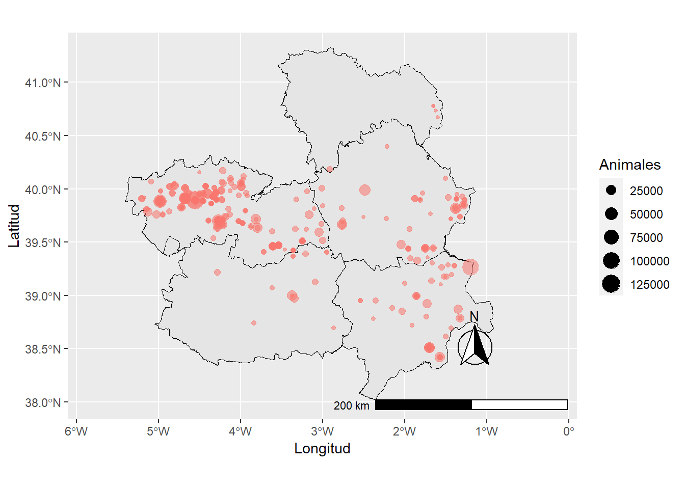
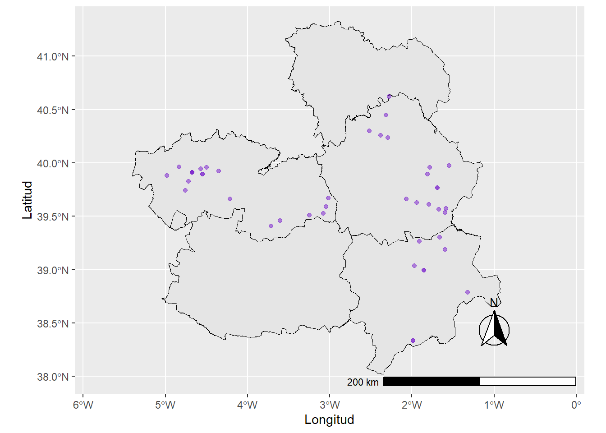
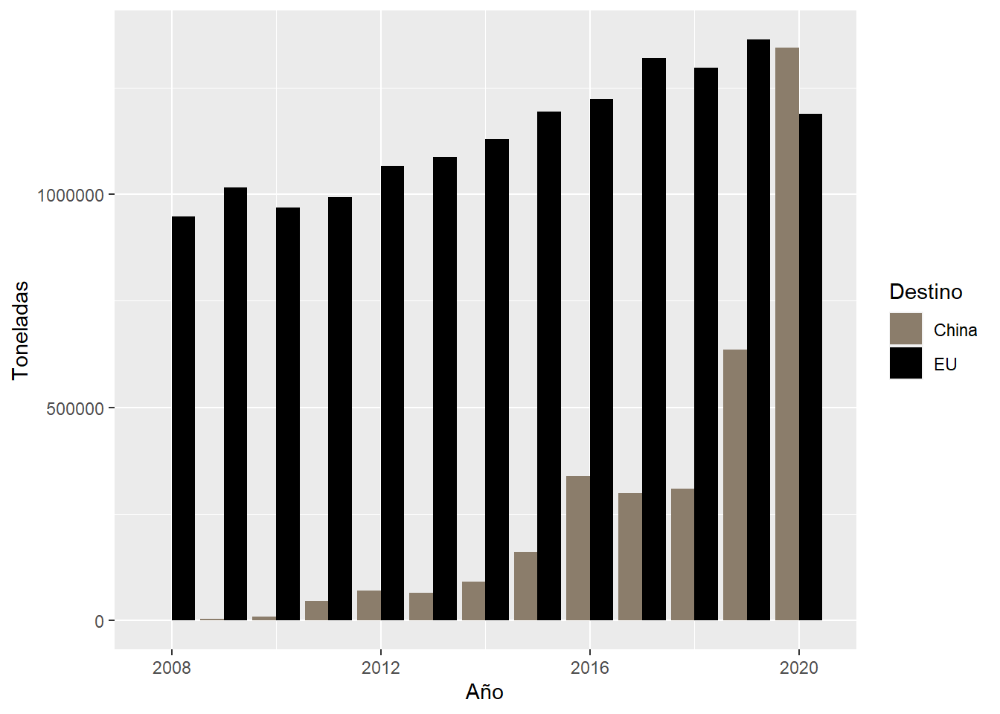

Luchando contra futuras pandemias
¡Bienvenido/a!
Esta página web es una forma de documentar el código en el que se base el analisis cuantitativo de mi proyecto de investigación. Está diseñada para ser usada al tiempo que se lee el artículo.
¿Cómo puedes utilizar esta web?
La página está organizada en varias pestañas. PERO hemos tenido errores técnicos de última hora. He debido borrar algún archivo sin darme cuenta y las pestañas no sólo son inservibles sino que además los hipervinculos están rotos. En su lugar, está página esta organizada por secciones por las que puedes navegar según lo que te interese.
El objetivo de esta web es hacer mi investigación reproducible y transparente. Por lo tanto, podrás encontrar explicaciones de mi código (escrito en el lenguaje de programación R). Las explicaciones bien son introducidas antes del código o entre el código (en ese caso, las explicaciones están introducidas por una almohodilla “#”).
#1 Creando un mapa de las granjas indsutriales de porcino existentes.
Empezamos cargando las librerías que utilizaremos.
library(tidyverse)## Warning: package 'tidyverse' was built under R version 4.0.5## -- Attaching packages --------------------------------------- tidyverse 1.3.1 --## v ggplot2 3.3.5 v purrr 0.3.4
## v tibble 3.1.2 v dplyr 1.0.7
## v tidyr 1.1.3 v stringr 1.4.0
## v readr 2.0.0 v forcats 0.5.1## Warning: package 'ggplot2' was built under R version 4.0.5## Warning: package 'tibble' was built under R version 4.0.5## Warning: package 'tidyr' was built under R version 4.0.5## Warning: package 'readr' was built under R version 4.0.5## Warning: package 'purrr' was built under R version 4.0.2## Warning: package 'dplyr' was built under R version 4.0.5## Warning: package 'stringr' was built under R version 4.0.3## Warning: package 'forcats' was built under R version 4.0.5## -- Conflicts ------------------------------------------ tidyverse_conflicts() --
## x dplyr::filter() masks stats::filter()
## x dplyr::lag() masks stats::lag()library(sf)## Warning: package 'sf' was built under R version 4.0.5## Linking to GEOS 3.9.0, GDAL 3.2.1, PROJ 7.2.1library(ggspatial)## Warning: package 'ggspatial' was built under R version 4.0.5library(readxl)## Warning: package 'readxl' was built under R version 4.0.2library(writexl)## Warning: package 'writexl' was built under R version 4.0.5library(sf)
library(tidygeocoder)## Warning: package 'tidygeocoder' was built under R version 4.0.5El primer mapa que crearemos será un mapa de las macrogranjas existentes en CLM en 2019.
Primeramente, importamos un excel que contiene las granjas porcinas con al menos 2000 cabezas. Es un excel creado a partir del Censo Porcino de CLM. Lo creé en base a datos de la Junta.
villages_macrogranjas <- read_excel("data/porcino +2000.xlsx")Para nuestro siguiente paso tenemos que “limpiar” nuestros datos. Como varios pueblos contienen artículos en sus nombres (ex: El Bonillo), vamos a usar la siguiente línea de código para separar el nombre de los pueblos con artículos en dos. Tendremos una columna que contendrá el artículot otra el municipio sin artículo.
villages_macrogranjas_municipality_split <- villages_macrogranjas %>%
separate(Municipio,c("MUNICIPIO","ARTICULO"),sep=",")## Warning: Expected 2 pieces. Missing pieces filled with `NA` in 333 rows [1, 2,
## 3, 4, 5, 6, 7, 8, 9, 10, 11, 12, 15, 16, 17, 18, 19, 20, 21, 22, ...].Como el lector/la lectora habrá podido observar, el excel con el que estamos trabajando no cuenta con coordenadas. Esto es un problema a la hora de crear un mapa. Afortunadamente, podemos usar el siguiente código para geocodificar automáticamente los pueblos donde existe(n), al menos, una granja con 2000 o más cabezas de porcino. Para realizar la geodificación, estamos solicitando acceso a los datos de Open Street Maps.
villages_geocoded <- villages_macrogranjas_municipality_split %>%
geocode("MUNICIPIO", method = 'osm', lat = latitude , long = longitude, min_time=2)CLM_provinces <- st_read("data/Provincias.shp") ## Reading layer `Provincias' from data source
## `C:\Victor\UCLM\Master\Clases\Seminario metodologia\Audiovisual\Web\Luchando_contra_futuras_pandemias\data\Provincias.shp'
## using driver `ESRI Shapefile'
## Simple feature collection with 5 features and 7 fields
## Geometry type: MULTIPOLYGON
## Dimension: XY
## Bounding box: xmin: -5.405995 ymin: 38.02244 xmax: -0.9159556 ymax: 41.32763
## Geodetic CRS: WGS 84Now we just have to plot our data in a new map!
CLM_provinces %>%
ggplot(aes("gray33"))+
geom_sf(color = "black", size = 0.1) +
geom_point(data=villages_geocoded, aes(x=longitude, y=latitude, size=Animales, colour="pink", alpha=0.01)) +
annotation_scale(location = "br", width_hint = 0.5) +
annotation_north_arrow(location = "br", which_north = "true",
pad_x = unit(0.75, "in"), pad_y = unit(0.5, "in"),
style = north_arrow_fancy_orienteering) +
coord_sf(xlim = c(-5.5, -0.5), ylim = c(38, 41.30)) +
guides(colour = FALSE, alpha = FALSE)+
xlab("Longitud")+
ylab("Latitud")## Warning: `guides(<scale> = FALSE)` is deprecated. Please use `guides(<scale> =
## "none")` instead.
¡Aquí tenemos nuestro primer mapa!
#2 Creando un mapa de las granjas indsutriales de porcino proyectadas.
Finalmente, vamos a crear un mapa de las granjas industriales de porcino proyectadas en CLM. Los datos provienen del NEVIA, un repositorio de la Junta de CLM que recoge los proyectos de evaluación ambiental. Es una fuente muy útil pero algo incompleta. No siempre determina la cantidad de cabezas que una granja planea tener en las mismas unidades (en ocasiones se usan cabezas y, en otras ocasiones, se usan Unidades Ganaderas Mayores). Por lo tanto, sólo podemos dar información sobre los lugares en los que se han proyectados granjas con 2000 o más cabezas (o bien con su equivalencia en Unidades Ganaderas Mayores).
projected_macrogranjas <- read_excel("data/projected_macrogranjas_clean.xlsx")Al igual que en último mapa, nuestra base de datos inicial no tienen geocoordenadas. No tenemos que preocuparnos, Open Street Maps nos volverá a sacar de esta situación.
projected_macrogranjas_geocoded <- projected_macrogranjas %>%
geocode("Municipio", method = 'osm', lat = latitude , long = longitude, min_time=2)Finalmente, sólo tenemos que crear nuestro segundo mapa.
CLM_provinces %>%
ggplot(aes("gray33"))+
geom_sf(color = "black", size = 0.1) +
geom_point(data=projected_macrogranjas_geocoded, colour="purple3", aes(x=longitude, y=latitude, alpha=0.01)) +
annotation_scale(location = "br", width_hint = 0.5) +
annotation_north_arrow(location = "br", which_north = "true",
pad_x = unit(0.75, "in"), pad_y = unit(0.5, "in"),
style = north_arrow_fancy_orienteering) +
coord_sf(xlim = c(-5.5, -0.5), ylim = c(38, 41.30)) +
guides(colour = FALSE, alpha = FALSE)+
xlab("Longitud")+
ylab("Latitud")## Warning: `guides(<scale> = FALSE)` is deprecated. Please use `guides(<scale> =
## "none")` instead.
#3 Exportaciones de carne de porcino españolas.
En esta sección vamos a crear un gráfico de barras de las exportaciones de carne porcina españolas. Conseguí los datos del Ministerio de Agricultura y Pesca de España, del último informe publicado del sector porcino. Manualmente, creé un Excel con las exportaciones anuales a China y a otros países de la UE. ¡Empecemos leyendo el excel! ;)
exports<- read_excel("data/pigmeat_exports2.xlsx")Como estamos usando números relativamente grandes, la tendencia de R es usar la notación cientifica. No es lo que queremos en este proyecto porque dificultaría la lectura de nuestro gráfico. Por lo tanto, vamos a solucionarlo con el siguiente código que establece la notación cientifica automática para cantidades superiores a las 2.000.000.000 unidades.
options(scipen=2000000000)Finalmente, solo tenemos que pedir a R que dibuje nuestro gráfico.
ggplot(data = exports, mapping = aes(x=Año, y=Toneladas, fill=Destino)) +
scale_fill_manual(values = c("bisque4", "black"))+
geom_bar(stat="identity", position = "dodge")
¡Y aquí tenemos nuestro gráfico de barras!
#4 Importaciones de soja a España.
Finalmente, nos queda la tarea más fácil: Mostrar los datos que hemos utilizado para determinar que España importa la mayoría del grano con el que se alimentan a cerdos estabulados del Sur Global. Para ello, descargué los datos de importaciones españolas de los productos de la soja realizadas en 2019 de FAOSTAT. El siguiente código carga el archivo CSV, el cual preparé de antemano calculando el porcentaje total de cada país.
imports<- read_csv("data/Imports_feed_Spain_2019.csv")## Rows: 80 Columns: 1## -- Column specification --------------------------------------------------------
## Delimiter: ","
## chr (1): Código de dóminio;Dóminio;Código del país que reporta los datos (FA...##
## i Use `spec()` to retrieve the full column specification for this data.
## i Specify the column types or set `show_col_types = FALSE` to quiet this message.#5 Bibliografía extendida.
Barton, M. D. (2014) Impact of antibiotic use in the swine industry. Current opinion in microbiology. 199–15.
Blaikie, P. M. & Brookfield, H. C. (1987) Land degradation and society. London ; New York: Methuen. Faostat (2021) FAOSTAT|Trade|Detailed Trade Matrix [online]. Available from: http://www.fao.org/faostat/en/#data (Accessed 19 August 2021).
Foster, J. B. et al. (2000) ‘An Overview.’, in John Bellamy Foster et al. (eds.) Hungry for Profit: The Agribusiness Threat to Farmers, Food, and the Environment. New York: Monthly Review Press. pp. 7–21. Foster, J. B. (1999) Marx’s Theory of Metabolic Rift: Classical Foundations for Environmental Sociology. American Journal of Sociology. [Online] 105 (2), 366–405.
Greenpeace Spain (2019) Enganchados a la carne. Cómo la adicción de Europa a la soja alimenta el cambio climático. Madrid: Greepeace Spain. [online]. Available from: https://es.greenpeace.org/es/sala-de-prensa/informes/enganchados-a-la-carne/.
JCCM (2021a) Censo Porcino Castilla La Mancha 2019.
JCCM (2021b) NEVIA: Expedientes de Evaluación Ambiental. [online]. Available from: https://neva.jccm.es/nevia/forms/nevif100.php.
JCCM (2020) Provincias de Castilla La Mancha (shapefile). [online]. Available from: https://opendata.esri.es/datasets/castillalamancha::provincias-de-castilla-la-mancha/explore?location=39.577939%2C-2.629719%2C7.88.
Lefebvre, H. et al. (2014) Critique of Everyday Life: the one-volume edition. One-vol. ed. London: Verso. Ríos-Núñez, S. M. & Coq-Huelva, D. (2015) The Transformation of the Spanish Livestock System in the Second and Third Food Regimes: The Transformation of the Spanish Livestock System. Journal of Agrarian Change. [Online] 15 (4), 519–540.
Weis, T. (2013) The Ecological Hoofprint: The Global Burden of Industrial Livestock. London, UNITED KINGDOM: Zed Books. [online]. Available from: http://ebookcentral.proquest.com/lib/kcl/detail.action?docID=1644030 (Accessed 1 April 2021).

Miembro de Pueblos Vivos Cuenca, disfrazado como un cerdo durante la Vendimia de la Vergüenza, organizada en Quintanar del Rey. 19/06/2021